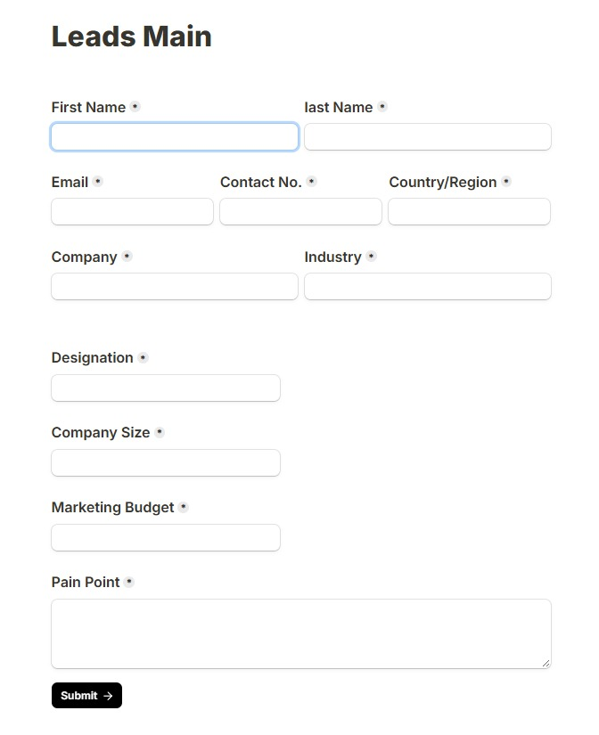
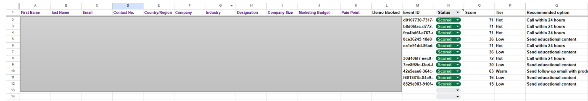

Automated Lead scoring workflow.
AI Workflows Project
The problem
Traditional lead management often relies on manual review and subjective judgement to determine which leads should be prioritised by the sales team. When lead information is collected from multiple sources, manually entering, analysing, and prioritising each lead can become time-consuming and inconsistent.
The key challenges identified were:
- Manual data entry: Lead information had to be manually transferred and organised.
- Inconsistent lead evaluation: Different team members could assess the same lead differently.
- Slow prioritisation: Sales teams could spend significant time identifying which leads required immediate attention.
- Difficulty handling lead volume: As the number of incoming leads increased, manually reviewing every lead became less scalable.
- Delayed action: Without automated prioritisation, high-value leads could take longer to reach the appropriate sales action.
Business Objective
The objective was to develop an automated lead-scoring workflow that captures lead information in Google Sheets, evaluates each lead against a predefined scoring logic, automatically assigns a lead score and tier, and recommends the appropriate follow-up action.
The Solution
This automated lead-scoring and prioritisation workflow captures the lead into Google Sheets and automatically evaluates them based on the scoring logic developed from the historical data, assigns them a tier, and recommends actions
The solution combines:
3. How It Works
Step 1 – Historical Data Analysis (Trend Analysis)
I have analysed the historical data (hypothetical dataset) and identified the pattern. Historical lead records were examined across relevant lead attributes to determine which characteristics appeared more frequently among leads that demonstrated stronger commercial potential. Based on that, I developed a scoring logic, containing the lead attributes
Lead Quality indicators are -
Step 2 - Developing the Scoring Logic
Following the historical trend analysis, the identified lead characteristics were translated into a structured lead-scoring framework.
Each relevant attribute was assigned a predefined number of points according to its perceived importance within the qualification process.
The scoring model follows the principle:
Total Lead Score = Sum of Points Assigned to Relevant Lead Characteristics
Tier Allocation -
Step 3 – Workflow 1: Automated Lead Registration
The first automation captures newly submitted lead information and automatically registers it in Google Sheets, eliminating manual data entry.
Workflow:

Form Submission Workflow 1 Automation
Workflow 1 Automation
Key Functions
- Captures lead information automatically.
- Creates a new row for each lead.
- Maintains a centralised and structured lead database.
- Reduces manual entry and data-handling errors.
- Provides the input required for the subsequent scoring workflow.
Step - 4 - Manual touch
Workflow 1 automatically captures and registers the lead details in Google Sheets and sets the initial status to “Lead Captured.”
The representative then manually reviews the lead to determine whether the lead has booked a demo, consultation, or site visit. Based on the outcome, the representative updates the “Demo Booked” field to “Yes” or “No” and changes the lead status to “Pending.”
This ensures that each lead is accurately recorded and verified before proceeding to the automated lead-scoring workflow.
Step 5 - workflow 2 - Automated Lead scoring
 Workflow 2 Architecture
Workflow 2 Architecture

Google Sheets Scored Output1. Google Sheets – Search Rows
The workflow starts by connecting to the Google Sheets and searching existing rows. It searches for pending rows on a scheduled time everyday and passes the bundle of information to the next step.
2. Iterator – Process Leads Individually
The Iterator takes the multiple lead records returned by Google Sheets and breaks them into individual lead items. Each lead is then processed independently through the scoring workflow.
3. Custom JavaScript
The Custom JavaScript module processes the individual lead data and applies the manually developed scoring Logic. Based on the lead's characteristics, it calculates the overall score and determines the appropriate tier and recommended action.
4. Google Sheets – Update a Row
Once the scoring process is completed, the workflow automatically updates the corresponding lead's row in Google Sheets with the calculated results.
Complete Workflow
Conclusion & Key Takeaways
The automated lead-scoring system transforms lead management from a manual registration and evaluation process into a structured, data-driven workflow.
Key Takeaways
- Automated: Reduces repetitive manual lead management.
- Data-driven: Scoring logic is informed by historical lead trends.
- Consistent: Applies the same qualification criteria to every lead.
- Prioritised: Automatically identifies different levels of lead priority.
- Actionable: Converts lead scores into recommended sales actions.
- Scalable: Provides a framework that can handle increasing lead volumes with minimal additional manual effort.